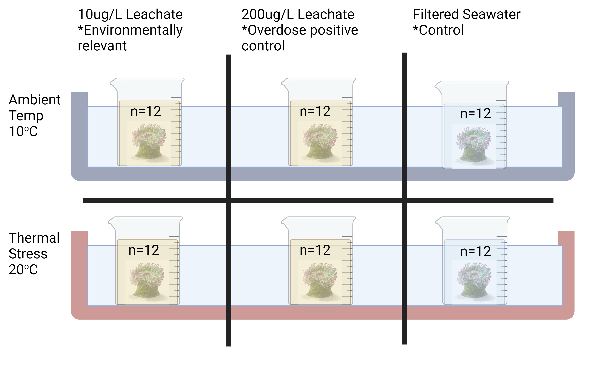

40+(12*6)[1] 1125*5[1] 25Sarah Tanja
January 2, 2024
October 23, 2025
The objective of this study is to examine the combined effects of thermal stress and marine microplastic leachate on photosynthetic efficiency, microbiome community, and gene expression in the aggregating sea anemone Anthopleura elegantissima and the algal symbiont Breviolum muscatinei. In essence, this study is both a global change study examining impacts of thermal stress on marine intertidal invertebrates, and an ecotoxicological study that assesses impacts of marine microplastic leachate associated with marine plastic pollution on a cnidarian host and an algal symbiont. We’ve chosen Anthopleura elegantissima as our study species because it is a clonal cnidarian that can form symbiotic relationships, can be collected and studied locally in the Pacific Northwest, and has an annotated genome. Anthopleura elegantissima can form symbioses with either the chlorophyte Elliptochloris marina (letsch2009?) or the dinoflagellate Breviolum muscatinei (lajeunesse2000?). In this study, we will only be working with the ‘golden brown’ anemones that are associated with the dinoflagellate Breviolum muscatinei in order to reduce variation in our response variables due to symbiont type. The golden brown anemones are also much easier to find and collect, as they are found in the mid to upper intertidal.
Marine microplastics are an emerging pollutant of concern that have only been widely ‘in play’ for the last 80 years
Plastics in landfills, polyester microfibers from washing machine sewage, and non-source point plastic pollution caught in road runoff all have chemical additives and chemical degredation derivatives that leach out of them forming a cocktail of chemicals and compounds termed ‘leachate’ that pollutes the environment
Urban coastal and intertidal environments are important habitats that support healthy oceans, healthy recreation, and healthy food security for the nation. The near coastal environment adjacent to urban centers may be one of the most exposed to marine microplastic leachate pollution
Yet, very little is known about the impacts of this type of pollution because it’s hard to study (plastics are everywhere!), and as stated previously, it’s only been around for the last 80 years coinciding with increased plastic production and integration into consumer products
We don’t know if/how marine microplastic leachate affects Cnidarians
We don’t know if/how marine microplastic leachate affects Cnidarians in the context of multiple stressors (i.e. a marine heatwave = thermal stress)
We don’t know if/how marine microplastic leachate affects the symbiotic relationship between Cnidarian hosts and their algal symbionts
Why do we care about filling in this knowledge gap?
Specimen collection
Anthopleura elegantissima will be collected from 12 distinct aggregates at Owens Beach, Point Defiance, Tacoma. From each distinct aggregate, we will collect 7 anemones
Acclimation
Treatment preparation
Washington Department of Fish & Wildlife scientific collection permit (Tanja 24-010) was submitted on 05-JAN-2024 and the $117 processing fee was paid from the lab’s purchase card over the phone on 08-JAN-2024. WDFW scientific collection permits can take up to 3 months to be approved. The final permit was approved on 26-FEB-2024. The permit allows for 40 lethal-take and 40 non-lethal take anemones to be collected at each of the following sites: - Keystone Jetty, Island County - Pocket Beach, King County - Skyline Wall, Skagit County - Deadman Bay, San Juan County - Sunrise Beach Park, Pierce County - Chuckanut Bay, Whatcom County - Cone Island, Skagit County - Point Defiance Park, Pierce County - Constellation Park, King County
Symbionts play a critical role in the stress response of Cnidarians to thermal stress
Microplastic leachate exposure changes the microbial community
Microplastic leachate exposure changes the microbial community in such a way that Cnidarians are more susceptible to thermal stress
Microplastic leachate and thermal stress act synergistically to disrupt Cnidarian microbial communities
The microbial community changes differently when exposed to microplastic stress as compared to thermal stress
We will collect 84 ‘golden brown’ Anthopleura elegantissima from Owen’s Beach at Point Defiance Park in Tacoma in the Salish Sea of Washington State. Individual anemones will be collected from each of 12 clonal aggregates by very gently scraping their pedal disc to separate it from their attached substrate. We will move 5 meters or more to what we can assume is a genetically distinct aggregate and repeat this, until we have 7 individuals from each of 12 clonal mats (a total of 84 individuals). One individual from each aggregate will be immediately flash-frozen in liquid nitrogen to serve as an environmental baseline control for both microbial and gene expression metrics. The remaining 72 anemones will be kept for experimentation.
The anemones will be transported in sea water from the collection site back to the University of Washington campus where they will be housed individually in labelled glass beakers that will be submerged in a recirculating seawater table and allowed to acclimate for at least 2 weeks to heal their pedal disc.
We will prepare plastic leachate in seawater as a treatment by soaking 250mg of plastic in 250ml of seawater in a glass beaker for 1 week with a stir-bar or shaker table. The 100% leachate that is formed from this soak has a known phthalate acid ester (PAE) concentration of ~10%, equaling 100mg of PAE per 250ml of seawater. This highly concentrated leachate will be diluted 1:1000 in filtered seawater to get to an environmentally relevant concentration of 100ug of PAE per liter of seawater.
The experiment will be setup as a 2x3 factorial design to test thermal stress and plastic leachate. Two seawater tables will be used as temperature baths, one set at an elevated temperature of 20\(^{\circ}\)C and another at an ambient temperature of 10\(^{\circ}\)C. Temperature will be controlled by an Apex Neptune Aquarium controller coupled to heat exchangers and light level will be standardized using Kessil aquarium lights. 20 specimens (two of each clonal mat) will be randomly placed in one of each water temperature treatment bath. Seatable water volume level will be dropped to just below the lip of the specimen beakers, and specimen beakers will be filled with either filtered seawater or with the dilute plastic seawater leachate treatment. The exposure will last 48 hours, after which anemones will be flash frozen in liquid nitrogen.

Flash frozen samples will be processed using the commercial Zymo Dual DNA/RNA MiniPrep kit to extract microbial DNA and host and symbiont RNA. The microbial DNA data will be used to analyze if there are any discernible shifts in the microbiome related to the treatments. The RNA will help us identify molecular pathways that may be disrupted by heat, leachate, and/or the combined multiple stressors of both in a cnidarian and its algal symbiont.
This shotgun of stress response variables will serve to offer a holistic view of cnidarian host and algal symbiont physiological response to temperature and plastic pollution leachate stress. It is well known that ocean heat waves are becoming more frequent and intense. Simultaneously, marine plastic pollution is becoming more prevalent and the chemical additives associated with plastic have become ubiquitous in our environments. As plastics weather mechanically, they also weather chemically by leaching additives not covalently bonded to the plastic polymer resins (Hahladakis et al. 2018). The most common plastic additives are a group of chemicals called plasticizers, also known as phthalates or phthlate acid esters (PAE). They are commonly added to PVC to increase flexibility and durability. However, phthlatates are known to mimic or interfere with hormones that control developmental, reproductive, and immune response in both humans and animals (maqboolReviewEndocrineDisorders2016?). Previous research shows that plastic leachates experimentally added to plants, bacteria, and algae impair growth, reduce photosynthesis, and shift microbial communities in lab studies (capolupo2020?; O’Brien et al. 2022; Tetu et al. 2019). However, little is known about environmental concentrations of plastic leachate in the context of increasing ocean temperatures. Marine heatwaves, plastic manufacturing, and pollution are predicted to increase (macleodGlobalThreatPlastic2021?; oliverMarineHeatwaves2021?). Therefore, it is urgent that we understand how thermal stress and plastic pollution interact and the effects they may have on coastal marine organisms, which are likely experiencing both the most extreme thermal stress and the highest amount of plastic pollution.
---
title: "Anemone Project Planning"
author: "Sarah Tanja"
date: '01/02/2024'
categories: [anemones]
draft: false
toc: true
toc-title: Contents <i class="bi bi-bookmark-heart"></i>
toc-depth: 5
toc-location: left
reference-location: margin
citation-location: margin
link-external-icon: true
link-external-newwindow: true
bibliography: ../anemone-leachate-heat.bib
---
## Conceptual planning
### Objective
The objective of this study is to examine the combined effects of thermal stress and marine microplastic leachate on photosynthetic efficiency, microbiome community, and gene expression in the aggregating sea anemone *Anthopleura elegantissima* and the algal symbiont *Breviolum muscatinei*. In essence, this study is both a global change study examining impacts of thermal stress on marine intertidal invertebrates, and an ecotoxicological study that assesses impacts of marine microplastic leachate associated with marine plastic pollution on a cnidarian host and an algal symbiont. We've chosen *Anthopleura elegantissima* as our study species because it is a clonal cnidarian that can form symbiotic relationships, can be collected and studied locally in the Pacific Northwest, and has an annotated genome. *Anthopleura elegantissima* can form symbioses with either the chlorophyte *Elliptochloris marina* [@letsch2009] or the dinoflagellate *Breviolum muscatinei* [@lajeunesse2000]. In this study, we will only be working with the 'golden brown' anemones that are associated with the dinoflagellate *Breviolum muscatinei* in order to reduce variation in our response variables due to symbiont type. The golden brown anemones are also much easier to find and collect, as they are found in the mid to upper intertidal.
### Problems
- Marine microplastics are an emerging pollutant of concern that have only been widely 'in play' for the last 80 years
- Plastics in landfills, polyester microfibers from washing machine sewage, and non-source point plastic pollution caught in road runoff all have chemical additives and chemical degredation derivatives that leach out of them forming a cocktail of chemicals and compounds termed 'leachate' that pollutes the environment
- Urban coastal and intertidal environments are important habitats that support healthy oceans, healthy recreation, and healthy food security for the nation. The near coastal environment adjacent to urban centers may be one of the most exposed to marine microplastic leachate pollution
- Yet, very little is known about the impacts of this type of pollution because it's hard to study (plastics are everywhere!), and as stated previously, it's only been around for the last 80 years coinciding with increased plastic production and integration into consumer products
### Here's what we do know
-
### What we don't know
- We don't know if/how marine microplastic leachate affects Cnidarians
- We don't know if/how marine microplastic leachate affects Cnidarians in the context of multiple stressors (i.e. a marine heatwave = thermal stress)
- We don't know if/how marine microplastic leachate affects the symbiotic relationship between Cnidarian hosts and their algal symbionts
> Why do we care about filling in this knowledge gap?
### Questions & Hypotheses
#### Overarching
::: {.callout-warning icon="false"}
## Questions
- How do the combined stressors of marine microplastic leachate and thermal stress affect the physiology of the temperate coastal anemone *Anthopleura elegantissima*?
- Does marine microplastic leachate reduce Cnidarians' capacity for resilience to thermal stress?
:::
::: {.callout-tip icon="false"}
## Hypotheses
- Thermal stress alone will have no significant impact on anemone respiration
- We expect that net photosynthesis will i
:::
#### Microbiome
::: {.callout-warning icon="false"}
## Questions
- Does exposure to marine microplastic leachate disrupt the function of the *A. elegantissima* microbiome community?
- Does exposure to thermal stress disrupt the function of the *A. elegantissima* microbiome community?
- Is the microbial community composition and functional response to the combined stressors of marine microplastic leachate and thermal stress additive?
:::
::: {.callout-tip icon="false"}
## Hypotheses
- Microbial community composition and function play a critical role in the stress response of Cnidarians
- Marine microplastic leachate exposure changes the microbial community
- Marine microplastic leachate exposure changes the microbial community in such a way that Cnidarians are more susceptible to thermal stress
- Marine microplastic leachate and thermal stress act synergistically to disrupt Cnidarian microbial communities
- The microbial community changes differently when exposed to microplastic stress as compared to thermal stress
:::
#### Differential Gene Expression
::: {.callout-warning icon="false"}
## Questions
:::
::: {.callout-tip icon="false"}
## Hypotheses
:::
#### Respiration
::: {.callout-warning icon="false"}
## Questions
:::
::: {.callout-tip icon="false"}
## Hypotheses
:::
#### Photosynthesis
::: {.callout-warning icon="false"}
## Questions
:::
::: {.callout-tip icon="false"}
## Hypotheses
:::
### Experimental design
[Equipment list](https://docs.google.com/spreadsheets/d/1U19bLRIR1PCuXxlcr5v33zAbFec1UUnc5c6CQ14r1qU/edit?usp=sharing)
#### Phase 1. Response Curve
```{r}
40+(12*6)
5*5
```
Specimen collection
*Anthopleura elegantissima* will be collected from 12 distinct aggregates at Owens Beach, Point Defiance, Tacoma. From each distinct aggregate, we will collect 7 anemones
Acclimation
Treatment preparation
#### Phase 2. Multiple Stressor
## Timeline log
- 05-JAN-2024: submitted scientific collection permit
- 26-FEB-2024: received scientific collection permit
- 06-MAR-2024: SST & KH scouted collection site at Owens Beach, Point Defiance
- 08-MAR-2024: Seattle Aquarium seawater pickup
- 18-MAR-2024: [Field collection at Owens Beach, Point Defiance](https://sarahtanja.github.io/quarto-blog/posts/projects/anemone/field-collection/field-collection.html)
- 28-MAR-2024: Seawater filter rig & UV sterilizer bulbs replaced
- 30-MAR-2024: Field collection at Constellation Park, Alki
- 09-APR-2024: ASTM seasalt delivery received, pH & DO probes calibrated
- 10-APR-2024: Seattle Aquarium seawater pickup
## Permits
Washington Department of Fish & Wildlife scientific collection permit (Tanja 24-010) was submitted on 05-JAN-2024 and the \$117 processing fee was paid from the lab's purchase card over the phone on 08-JAN-2024. WDFW scientific collection permits can take up to 3 months to be approved. The final permit was approved on 26-FEB-2024. The permit allows for 40 lethal-take and 40 non-lethal take anemones to be collected at each of the following sites: - Keystone Jetty, Island County - Pocket Beach, King County - Skyline Wall, Skagit County - Deadman Bay, San Juan County - Sunrise Beach Park, Pierce County - Chuckanut Bay, Whatcom County - Cone Island, Skagit County - Point Defiance Park, Pierce County - Constellation Park, King County. I requested an update to the permit on
## Data & Code Organization
### Hypotheses
> Symbionts play a critical role in the stress response of Cnidarians to thermal stress
> Microplastic leachate exposure changes the microbial community
> Microplastic leachate exposure changes the microbial community in such a way that Cnidarians are more susceptible to thermal stress
> Microplastic leachate and thermal stress act synergistically to disrupt Cnidarian microbial communities
> The microbial community changes differently when exposed to microplastic stress as compared to thermal stress
### Specimen collection
We will collect 84 'golden brown' *Anthopleura elegantissima* from Owen's Beach at Point Defiance Park in Tacoma in the Salish Sea of Washington State. Individual anemones will be collected from each of 12 clonal aggregates by very gently scraping their pedal disc to separate it from their attached substrate. We will move 5 meters or more to what we can assume is a genetically distinct aggregate and repeat this, until we have 7 individuals from each of 12 clonal mats (a total of 84 individuals). One individual from each aggregate will be immediately flash-frozen in liquid nitrogen to serve as an environmental baseline control for both microbial and gene expression metrics. The remaining 72 anemones will be kept for experimentation.
### Specimen housing & acclimation
The anemones will be transported in sea water from the collection site back to the University of Washington campus where they will be housed individually in labelled glass beakers that will be submerged in a recirculating seawater table and allowed to acclimate for at least 2 weeks to heal their pedal disc.
### Treatment preparation
We will prepare plastic leachate in seawater as a treatment by soaking 250mg of plastic in 250ml of seawater in a glass beaker for 1 week with a stir-bar or shaker table. The 100% leachate that is formed from this soak has a known phthalate acid ester (PAE) concentration of \~10%, equaling 100mg of PAE per 250ml of seawater. This highly concentrated leachate will be diluted 1:1000 in filtered seawater to get to an environmentally relevant concentration of 100ug of PAE per liter of seawater.
### Experiment
The experiment will be setup as a 2x3 factorial design to test thermal stress and plastic leachate. Two seawater tables will be used as temperature baths, one set at an elevated temperature of 20$^{\circ}$C and another at an ambient temperature of 10$^{\circ}$C. Temperature will be controlled by an Apex Neptune Aquarium controller coupled to heat exchangers and light level will be standardized using Kessil aquarium lights. 20 specimens (two of each clonal mat) will be randomly placed in one of each water temperature treatment bath. Seatable water volume level will be dropped to just below the lip of the specimen beakers, and specimen beakers will be filled with either filtered seawater or with the dilute plastic seawater leachate treatment. The exposure will last 48 hours, after which anemones will be flash frozen in liquid nitrogen.
{width="419"}
### Sample Processing
Flash frozen samples will be processed using the commercial Zymo Dual DNA/RNA MiniPrep kit to extract microbial DNA and host and symbiont RNA. The microbial DNA data will be used to analyze if there are any discernible shifts in the microbiome related to the treatments. The RNA will help us identify molecular pathways that may be disrupted by heat, leachate, and/or the combined multiple stressors of both in a cnidarian and its algal symbiont.
### Merit
This shotgun of stress response variables will serve to offer a holistic view of cnidarian host and algal symbiont physiological response to temperature and plastic pollution leachate stress. It is well known that ocean heat waves are becoming more frequent and intense. Simultaneously, marine plastic pollution is becoming more prevalent and the chemical additives associated with plastic have become ubiquitous in our environments. As plastics weather mechanically, they also weather chemically by leaching additives not covalently bonded to the plastic polymer resins [@hahladakis2018]. The most common plastic additives are a group of chemicals called plasticizers, also known as phthalates or phthlate acid esters (PAE). They are commonly added to PVC to increase flexibility and durability. However, phthlatates are known to mimic or interfere with hormones that control developmental, reproductive, and immune response in both humans and animals [@maqboolReviewEndocrineDisorders2016]. Previous research shows that plastic leachates experimentally added to plants, bacteria, and algae impair growth, reduce photosynthesis, and shift microbial communities in lab studies [@capolupo2020; @obrien2022; @tetu2019]. However, little is known about environmental concentrations of plastic leachate in the context of increasing ocean temperatures. Marine heatwaves, plastic manufacturing, and pollution are predicted to increase [@macleodGlobalThreatPlastic2021; @oliverMarineHeatwaves2021]. Therefore, it is urgent that we understand how thermal stress and plastic pollution interact and the effects they may have on coastal marine organisms, which are likely experiencing both the most extreme thermal stress and the highest amount of plastic pollution.